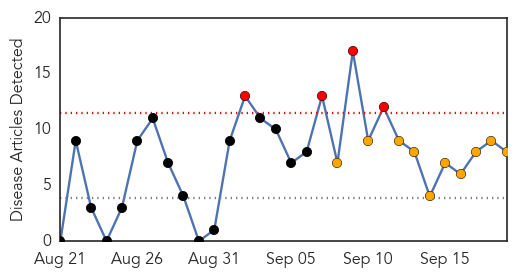
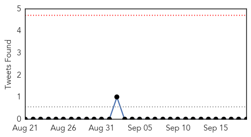
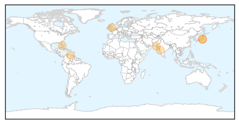
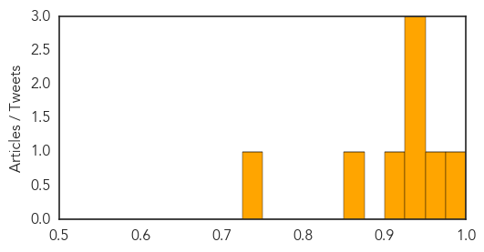

Toggle navigation
Early Warning
Daily Alerts
Dengue Fever
Sep 19, 2014
Compare to:
-
Hemmorhagic Fever
Mold/Fungal Infection
Influenza
Meningitis
Pertussis / Whooping Cough
Middle East Respiratory Syndrome
Cholera
Hepatitis
Chikungunya
Yellow Fever
Bubonic Plague
West Nile Virus
Swine Flu
Ebola
Measles
Unknown
Mumps
30 Day Trends
Web: 4
alerts
, 10
warnings
Twitter: 0
alerts
, 0
warnings
Top Articles:
1.000
Defeating dengue fever
0.975
Mosquito density high, alerts issued in high-risk areas
0.936
Officials spray insecticide in Ueno Park after new dengue fever case ‹ Japan Today
0.926
Maduro says foreign media behind fears of epidemic
0.926
Killer mosquito invasion reaches the UK from Europe
0.924
Maduro says foreign media behind fears of epidemic
0.862
‘Efficient approach needed to prevent viral infections’
0.741
SGGP English Edition- PM backs ASEAN health links
Top Tweets:
No tweets found for Sep 19, 2014
Web/News Articles

Tweets

Article Locations

Article Confidences
